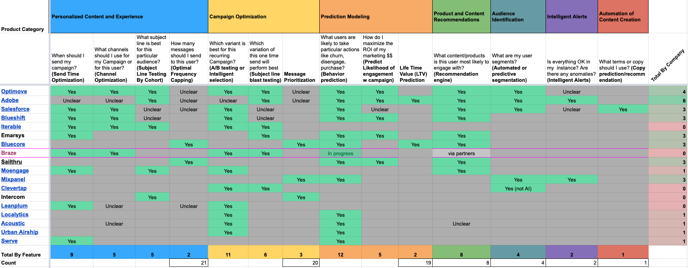
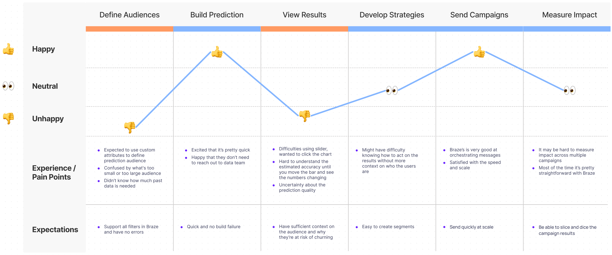
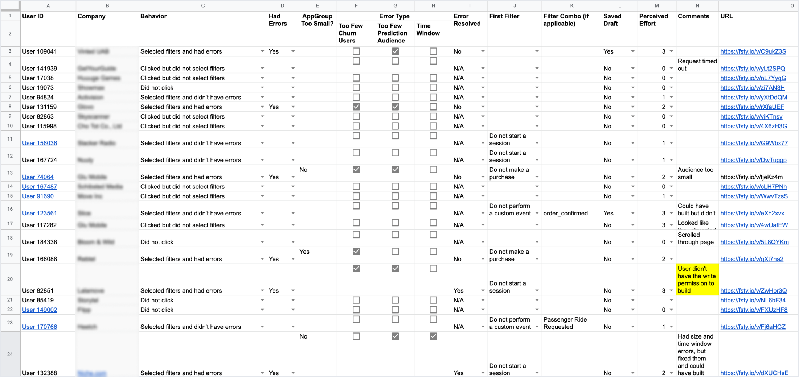
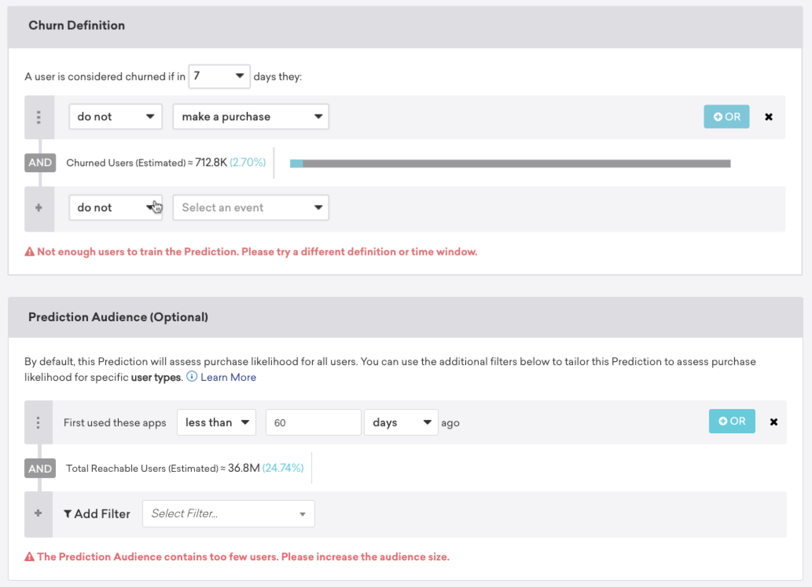

Together App - Building a Better Learning Community for College Students
In this Capstone project at CMU, we have partnered with Virginia Tech's Provost Office to improve the accessibility and effectiveness of undergraduate tutoring services in science and engineering calculus courses from January 2017 to August 2017. As the Design Lead, I collaborated with one developer, one researcher, and one project manager to deliver Together, a mobile app that enhances peer-learning and tutoring experiences in calculus.
The Problem
Leveraging a Better Data Flow to Create a More Effective Tutoring Experience
At present, tutors at Virginia Tech have no data to inform their work with individual students. Students seeking tutoring identify the particular concept or procedure they find challenging. Through discussion and practice, the tutor discerns how best to assist the student. This is especially complicated in a group session where the students may bring a diversity of learning challenges to a tutor. Tutoring sessions also are constrained by time. In this project, the challenge is to create a learning resource to facilitate more effective tutoring in individual and group sessions, specifically in foundational calculus courses.
Preliminary Research
Understanding the market and user expectations
I started by looking at relevant products on the market to get a better understanding of how AI has been used in marketing technology. This provided me with a perspective on the larger context in which our project was scoped.

Feature matrix for AI/ML in Marketing
Beta Testing
Finding the gaps between user needs and the beta
We interviewed 8 beta users and had them walk us through how they’ve used the initial version. Below is a summary of the pain points:
- Users found it unintuitive to define churn the way they wanted with the traditional segmentation filters
- Users were overwhelmed by the amount of textual information and generally didn’t find them helpful
- Users struggled with processing the results and understanding what actions to take
Design Goals
Enable marketers to create predictive models as quickly as possible, while providing transparency that promotes trust in the product
A typical marketer has little knowledge about machine learning, so we need to make the process of creating a prediction model and analyzing the results as simple as possible, while maintaining a level of transparency that builds trust. The goals for the iterations are broken down to:
- Provide better guidance on how to create a predictive model
- Facilitate understanding of the predictive insights and strategy planning with better visualizations and interactions

Journey of marketers using Predictions in their workflow
Ideation
How might we simplify the flow of creating a model and encourage actions with richer insights in results?
We hosted a sketching session with engineers, data scientists, product managers, and designers from other product verticals. This collaborative format allowed us to bring different and fresh perspectives and ideas to the table. I started gathering all the ideas and converging them into multiple concepts.

Some of the sketches from the sketching session
For the Prediction Creation page, I wanted to minimize the amount of the text users need to digest upfront, so they can focus on creating the model as quickly as possible. Below is my initial exploration.
Understanding where the friction occurred
After the testing, we launched the first version of Predictive Churn. In the first few months, we noticed that almost 70% of the users who started the creation process left without successfully building one. To understand why, we observed over 100 user sessions on FullStory.

User behaviors analysis from FullStory
We found that when all the settings are on one page, it was difficult to understand what to do when errors due to insufficient data occurred. Users were struggling with understanding how to resolve with errors with ambiguous guidance, and many of them left because they were stuck.

Providing a better focus on each task at a time with a step-by-step flow
With this iteration, I separated each configuration for creating a prediction into a one-page step, allowing users to focus on one task at a time without getting distracted by errors from other settings. We tested this design with 12 users, and all of them were able to complete the tasks and satisfied with the flow.
#1 Define what churn means to your business
#2 Specify the audience you want to predict churn risk for
#3 Build the prediction and let us do the magic
#4 Interact with the results and see estimated accuracy
#5 Create a segment and target users at risk of churning